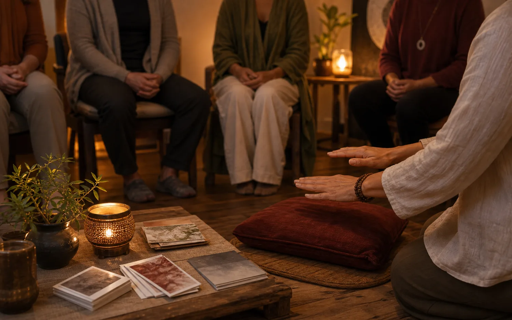
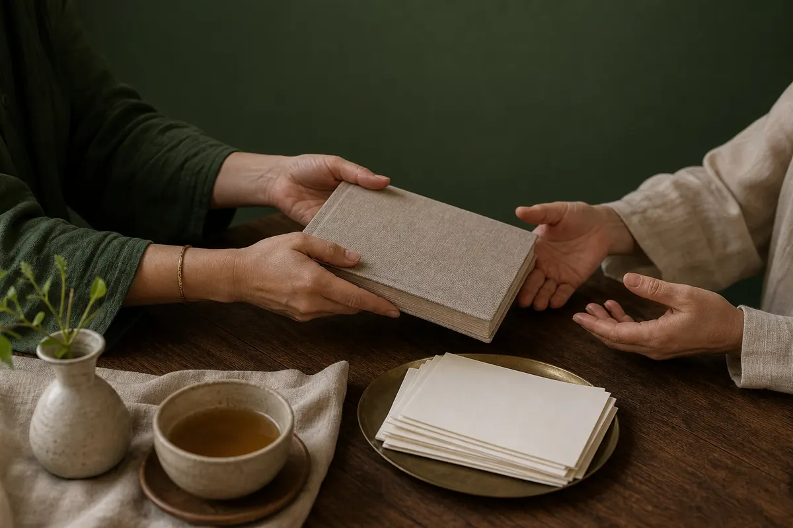
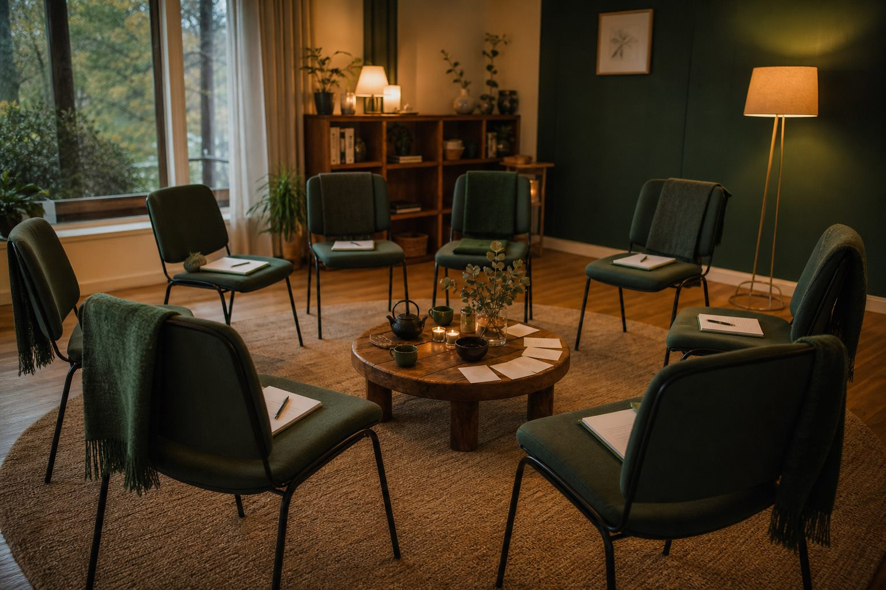
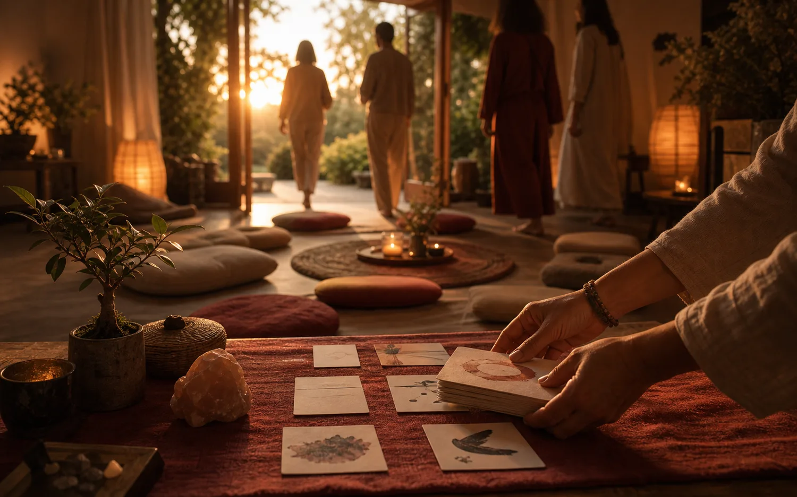

Четвёртый этап пути: когда практика становится передачей
Мастер-Учитель Рейки
Этот уровень учит проводить инициации Рейки I и II, объяснять практику простым языком и вести первых учеников к собственной устойчивой практике.
Мастер-Учитель Рейки учится проводить инициации Рейки I и Рейки II, объяснять практику простым языком, вести небольшие группы, сопровождать первых учеников и отвечать за качество передачи. Это личная практика, форма работы с людьми, энергообменом и собственной видимостью.
Вход начинается с разговора со Светланой Страусс. Здесь важны ступени, зрелость, практика, этика и готовность быть опорой для других.

Узнавание
Когда хочется помогать и передавать инструмент
Вы уже умеете давать Рейки себе, близким и тем, кто приходит к вам за спокойствием, ясностью или поддержкой.
Постепенно становится понятно: служение может быть и в сеансе, и в передаче самостоятельного инструмента.
Хочется дать человеку способ, к которому он сможет возвращаться сам.
Вы чувствуете готовность обучать этому детей, близких, знакомых или будущих учеников: помогать им становиться самостоятельнее и сильнее в своей практике.

После Мастера Жизни
От своей практики к ответственности за ученика после инициации
Мастер жизни раскрывает Мастера-Целителя и взрослую опору внутри себя. Мастер-Учитель Рейки начинается там, где эта опора хочет стать передачей.
Когда человек держит собственную жизнь, ему легче вести учеников: сохранять стержень, качество передачи и ясность в ожиданиях других людей.
В Доме Эволюции логика выстроена так: сначала личная целостность, потом ответственность за поле, в котором учатся другие люди.
Я держу свою жизнь
Работа с целостностью, мастерским символом, результатами, внутренней зрелостью и собственной линией проявления.
Я могу передавать практику
Обучение, инициации, работа с группами, сопровождение учеников и свой формат передачи, за который спокойно отвечать.
Что открывается
Мастер-Учитель учится инициировать, обучать и сопровождать
Формальное право провести инициацию — только часть пути. Главная работа начинается в способности держать качество, объяснять практику и быть рядом с первыми учениками.
Инициации Рейки I и II
Сначала обучение передаче первой ступени, затем — второй. Важно понимать, что происходит с человеком до, во время и после передачи.
Обучение простым вещам
Мастер-Учитель умеет объяснить азы, структуру практики, границы применения и самостоятельные шаги ученика ясно и бережно.
Группы и круги практики
Можно вести небольшие группы, круги поддержки и пространства, где люди с Рейки практикуют, задают вопросы и укрепляются в опыте.
Сопровождение первых учеников
После инициации у ученика есть поддержка. Мастер-Учитель учится видеть, где нужна помощь, а где важно укрепить самостоятельность человека.
Свой формат передачи
Кто-то раскрывается через тело и массаж, кто-то через творчество, кто-то через глубокие объяснения простыми словами. Важно найти свой голос внутри линии Рейки.
Профессиональная ответственность
Это взрослая практика, где важны границы, этика, ясность и готовность быть видимым.
Профессиональная практика
Мастер-Учитель собирает энергию и форму работы
Когда вы начинаете вести людей, одной внутренней готовности мало. Нужны понятная программа, первые форматы, границы, энергообмен и способ быть видимым мягко и уважительно к ученикам.
В подготовке появляется практическая сторона: как объяснить, кому вы помогаете, как устроить вводную встречу, как вести мини-группу, как сопровождать после инициации и как говорить о стоимости честно.
На этом этапе человек инвестирует в обучение и постепенно выстраивает профессиональную практику: первые ученики, понятные форматы, зрелый энергообмен и ответственность за качество своей передачи.
Как устроен вход
На этот этап входят через личное решение Мастера
Начало — разговор со Светланой Страусс: о вашем пути, практике, мотивации, готовности вести людей и о том, где именно вам нужна подготовка.
Если вы проходили Рейки в другой линии или у другого Мастера, вход возможен через разговор, проверку подготовки и, при необходимости, дообучение или переинициацию.
Это настройка совпадения: Мастер, ученик, линия передачи, ответственность и реальная готовность к следующему уровню.

Как ведёт Светлана
Светлана готовит самостоятельных Мастеров
Светлана Страусс — учредитель Дома Эволюции и Мастер-Учитель Рейки. На уровне Мастера-Учителя она работает с техникой инициации и с тем, как человек станет видимым, понятным и самостоятельным в своей передаче.
Это включает структуру группы, работу с учеником, первые программы, поддержку в первых форматах, обратную связь и честный разговор о качествах, которые нужно дорастить для самостоятельной практики.
учредитель Дома Эволюции
Мастер-Учитель Рейки
около 40 лет личного пути в Рейки и мастерстве
более 9 подготовленных Мастеров-Учителей Рейки
Живое объяснение
Посмотрите, как Светлана говорит о мастерском пути
Перед входом в передачу важно услышать правила ступени и саму интонацию Мастера: как Светлана говорит о зрелости, ответственности и живой линии практики.
Это видео помогает почувствовать, что мастерский путь начинается с готовности держать пространство, где другие люди учатся становиться самостоятельнее.
Видео «Мастер-учитель. Рейки».
Свой формат
У каждого Мастера-Учителя должна появиться своя живая форма передачи
Рейки остаётся линией передачи, а способ говорить с людьми, вести практику и собирать учебное пространство становится живым продолжением человека.
Кто-то становится телесным Мастером, кто-то творческим, кто-то сильным объясняющим учителем. На этом этапе важно увидеть, через какие качества именно вы можете быть полезны людям.
Как вы объясняете практику так, чтобы человек понимал и чувствовал.
Группы, индивидуальная работа, круги, вводные встречи, мини-программы или сотрудничество.
Способность ценить свой труд и держать зрелую профессиональную рамку.
С чем вы выходите
С правом обучать и собранной учительской опорой
К концу пути у Мастера-Учителя появляется понимание, как передавать Рейки I и II так, чтобы ученик постепенно укреплялся в собственной практике.
Это основа, из которой можно честно развивать свою работу, группы, круги практики и первые программы.
Вы понимаете, как собрать занятие, подготовку, инициацию и сопровождение после обучения.
Вы учитесь быть рядом с вопросами, сомнениями, сопротивлением и первыми шагами ученика.
Появляется опыт держать пространство нескольких людей, сохраняя границы и качество передачи.
У вас начинает оформляться свой голос, способ объяснять, первые услуги и понятный путь для учеников.
Важные опоры
Этот уровень нужен, когда созрело желание передавать
После Мастера Жизни можно остаться в своём мастерском направлении или пойти в передачу Рейки другим людям.
Преподавание начинается там, где созрело настоящее желание быть сопричастным к изменениям других людей и достаточно взрослости, чтобы уважать их самостоятельный путь.
Маршрут Рейки
Путь Рейки
Вопросы
Частые вопросы
Эти ответы помогают отделить желание помогать людям от готовности обучать их самостоятельной практике.
Желательно идти по одной линии, но вход после другой школы возможен через разговор. Светлане важно понять вашу подготовку, открытость канала и, если нужно, предложить дообучение или переинициацию.
Да, через разговор о вашем опыте, практике, Мастере, линии передачи и шагах, которые помогут войти в систему Дома Эволюции честно и безопасно.
Важны зрелое желание передавать практику, собственная опора и готовность учиться педагогике, структуре группы, обратной связи и ответственности. Количество клиентов обсуждается индивидуально.
У кого-то рождаются небольшие группы, индивидуальная практика, сотрудничество, вводные встречи или формат, который совмещается с другой профессией.
Вы переходите в личный контакт со Светланой, обсуждаете ваш путь, готовность, мотивацию и возможный маршрут. После этого становится понятно, подходит ли сейчас этот этап и с чего начинать.
Обычно готовность чувствуется как спокойное желание передавать практику и создать учебное пространство, где другой человек сможет встретиться с Рейки и стать самостоятельнее.

Готовность к ученикам
Если у вас уже есть люди, которым вы хотите передать Рейки бережно
Начните с честного разговора: где вы сейчас, как хотите обучать и готовы ли вы держать ученика после инициации.
Стоимость — €4 000можно двумя частямипередача Рейки I и IIпервые инициации с сопровождением